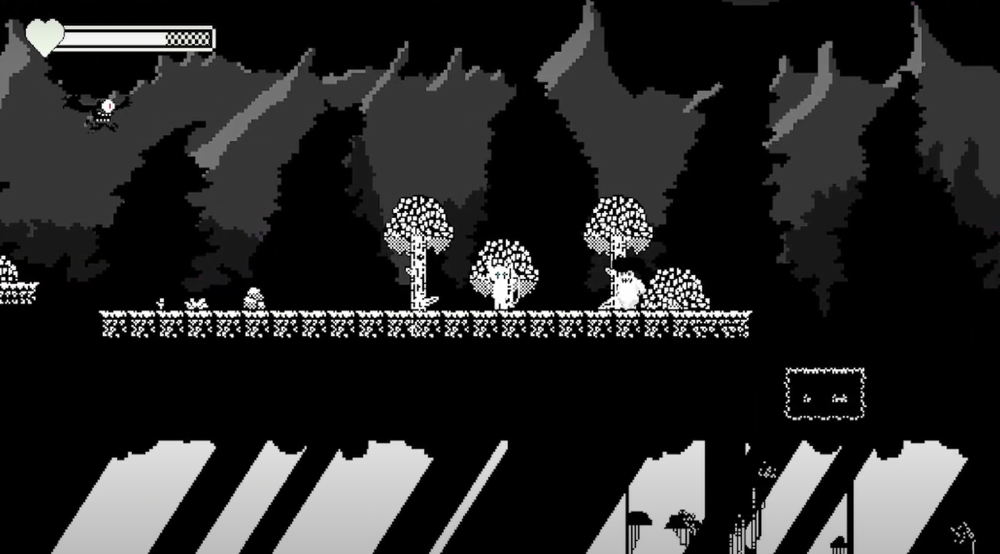

Projects
Afterwords

Afterwords takes you on a journey through the fading memories of your past. This puzzle-driven, story-focused game allows you to explore different phases of your life within the same family home.
As you solve puzzles, you'll uncover your name along the way. Each level represents a unique memory, with the environment changing to reflect the time period you are reliving. To progress, you'll listen to conversations, find hidden words, and combine them into passwords to unlock the next memory.
The clock is ticking—memories are fading...


Nuna

Nuna is a childlike fable about dreams and the world within. It is also an in-development pixel art RPG where a bear-like child will awake from slumber to discover a fantasy world moved by that which animates our deepest imaginations, our oniric shores - that one thing that cannot be explained, yet we live through. Inspired profoundly by Undertale and Yume Nikki, Nuna is currently under development ʕ -ᴥ•ʔ♡
Bronwyn

Bronwyn means the return of the feminine beyond death. She is an ever-changing entity emerged from the swampy waters of old, Hamlet's Ophelia reborn. Inspired by Spanish poet J.E. Cirlot's Bronwyn saga, she exists forever trapped in Irreality.
Blood Covenant

Blood Covenant is a bullethell nightmare created in 3 days with partners Mateo and Laura for the 2024 TODO Game Jam. I was responsible for the game design, narrative, some art and animation, and music production. The picture depicts the final boss arena, where you fight Samæl, in Hebrew "Blindness of God", attempting to stop you from deicide.
Mirrored Flesh

Mirrored Flesh is a 1.5bit Metroidvania prototype developed in Unity for my Master's Degree in Videogame Programming & Design at Universidad Oberta de Catalunya. Play as the demigod sisters Waleria and Magdala, guide your steps through the elderly forests where the Relics of the Mother lie hidden. Waleria incarnates Goddess Diana, she can be seen through pearly reflections in the night, her blow firing silver death. Magdala, knighthearted, her armour by a burning ember inflamed. Her swords open path to an origin unthought. You can see the functioning of the prototype and a bit about the developing process in YouTube!